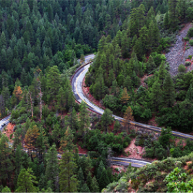

Приветствие.
Фото и видео
Не можете решиться на путешествие из-за курса? Фотографии помогут вам забыть о политике и экономике.
-
неродные просторы
1350
-
Местная растительность
143
-
 Дорога на север
96
-
Мост дьявола
254
Все еще сомневаетесь?
Смотрите видеопрезентацию и скорее за билетами, пока они не подорожали в очередной раз!